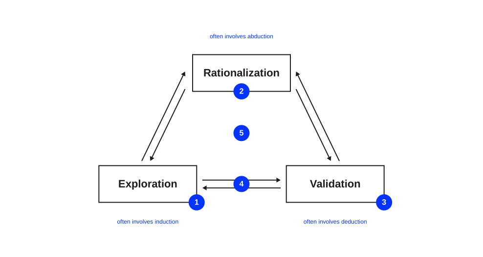
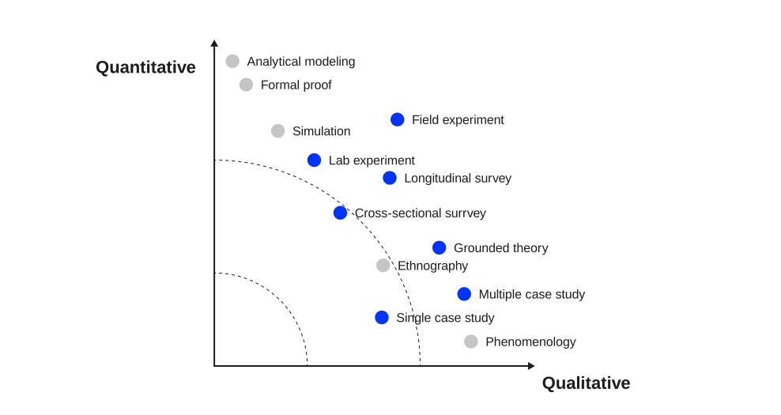
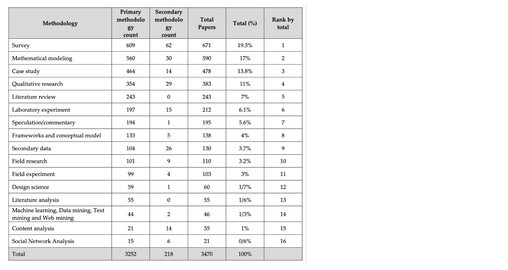

Research design
A comprehensive plan for empirical research
Basics
Overview
Once you have your research question well specified, the next challenge is to create an action plan to answer the question and test your theory about the answer. That is what we call a research design.
The action plan
A research design is the blueprint for the collection, measurement, and analysis of data that
- typically requires a combination of reasoning skills such as induction, deduction, and abduction;
- and often involves different research strategies such as exploration, rationalization, and validation (Recker, 2021)
- Exploration:
- The systematic discovery of things or phenomena encountered in common experience. Often involves induction.
- Rationalization
- Making sense of the puzzle or problem that interests us. Often involves abduction.
- Validation
- Subjecting an emergent or existing theory to rigorous examination and testing. Often involves deduction.
Different research methods can be used as a tool to support inductive, deductive, or abductive reasoning.
Deduction
Deduction is a form of logical reasoning that involves deriving arguments as logical consequences of a set of more general premises (i.e., justification). It involves deducing a conclusion from a general premise (i.e., a known theory) to a specific instance (i.e., an observation) (Recker, 2021).
- Nature: Deduction involves starting with general principles, theories, or hypotheses and deriving specific predictions or conclusions from them.
- Process: Researchers begin with a set of premises or assumptions and use logical reasoning to draw specific implications or hypotheses.
- Purpose: The primary goal of deduction is to test the validity of a general theory or hypothesis by examining its specific implications.
- Problem: If the premise is incorrect, the deduction becomes invalid.
- Example: If all humans are mortal (general premise), and Socrates is a human (specific premise), then it can be deduced that Socrates is mortal.
Induction
A form of logical reasoning that involves inferring a general conclusion from a set of specific facts or observations (i.e., formal inference). It is used to infer theoretical concepts and patterns from observed data or known facts to generate new knowledge by proceeding from particulars to generals (Recker, 2021).
- Nature: Induction involves deriving general principles, theories, or (tentative) conclusions from specific observations or evidence, that are probable but not certain.
- Process: Researchers gather specific data or evidence and use it to draw broader patterns, generalizations, or theories.
- Problem: Inductive arguments, which can be weak or strong, cannot be justified, only supported or not supported.
- Purpose: Induction aims to develop new theories, patterns, or generalizations based on observed evidence.
- Example: Observing that all observed swans are white (specific observations) leads to the generalization that all swans are white (general principle).
Abduction
Abduction is the process of making sense of an observation by drawing inferences about the best possible explanation for an observed consequence after the fact (Recker, 2021).
- Nature: Abduction involves creating plausible explanations or hypotheses to explain observed phenomena, but they are not guaranteed to be true.
- Process: Researchers propose potential explanations for observations or patterns, often guided by existing knowledge or theories.
- Purpose: Abduction is used when faced with surprising or unexpected observations that do not fit existing theories, aiming to generate new hypotheses for further investigation. It is geared toward the discovery of entirely new ideas rather then a mode of justification (through deduction) or formal inference (through induction).
- Example: If a crime scene has fingerprints but no eyewitnesses, and it’s known that criminals often leave fingerprints (existing knowledge), then it’s abductive to hypothesize that a criminal was present.
Combination of strategies
Good research involves strategies for exploration, rationalization, and validation (Recker, 2021).

- Exploration involves investigating new areas, generating ideas, and identifying patterns or phenomena that haven’t been studied extensively.
Example: A researcher might conduct exploratory interviews with a small group of people to understand their experiences with a new technology. This helps in forming initial hypotheses and understanding the scope of the research problem1. - Rationalization involves developing logical explanations and theories based on the data collected. It often includes forming hypotheses and theoretical frameworks.
Example: After gathering data on how people use a new app, a researcher might rationalize that certain features are more popular because they align with users’ daily routines. This step helps in building a coherent narrative or theory around the observations1. - Validation is the process of confirming that the findings and theories are accurate and reliable. This often involves testing hypotheses and ensuring that the results can be replicated.
Example: To validate their findings, a researcher might conduct a follow-up study with a larger sample size or use different methods to see if the results hold true. This step is crucial for establishing the credibility of the research2.
Exploration, rationalization, and validation do not necessarily follow each other in a defined linear or temporal manner. Good research typically moves back and forth among them, as shown in Figure 1.
The emphasis of any one study can be on either end (1,2,3) or in combination (e.g., 4). Often, only so-called research programs (combinations of multiple studies) can achieve all (5).
We may find that explaining a particular behavior requires that we collect additional observations about other behaviours that we did not identify as relevant to our initial exploration. The interplay between rationalization and exploration can also provide a set of initial evidence against which we can test the outcomes of our rationalization process or evaluate a set of tentative propositions between constructs that capture a phenomenon. The rationalization should be valid in light of any observations that we collected. Once a rationalization, in which tentative general propositions are created through inductive reasoning from observations or through abduction, has been made, we can proceed to validation, where we develop testable hypotheses or propositions for a particular context or scenario from our more general theory. These hypotheses can be subjected to further empirical tests using new or existing cases. The results or evidence collected may suggest that we revise our rationalization (moving from validation back to rationalization), which could involve abduction. For example, our validation may find an observable mechanism that speaks against the logic of our propositions, requiring us to make an educated guess about why it happened or how these observations can otherwise be explained. Recker (2021, pp. 43–44)
Research design decisions
The key benchmark against which your research design must be aligned is the problem statement as specified in the research question(s)—the research design must match logically the research question.
| Spectrum | One end of continuum | Other end of continuum | |
|---|---|---|---|
| Aim | Exploratory | vs | Explanatory |
| Method | Qualitative | vs | Quantitative |
| Boundary | Case | vs | Statistical properties 1 |
| Setting | Field | vs | Laboratory |
| Timing | Several cases, one point in time (cross-sectional) | vs | One case over time (longitudinal) |
| Outcome | Descriptive | vs | Causal |
Other considerations
The alignment between research question(s) and design does not have to be unidirectional. In fact, most research questions are tweaked and altered over time to reflect an updated research design, although research questions should retain their prominence over the research design (Recker, 2021).
- Data: What type of data is required? What type of data might be available? Where can I collect observations or other forms of evidence? How will I sample the relevant data?
- Risks: What are the potential dangers associated with execution of the research design? For example, what is the likelihood of a case organisation not being available for study anymore? What are strategies available to minimize or mitigate these risks?
- Theory: How much literature concerning the phenomena of interest is available? What are problems with the knowledge base? What findings have been produced to date that might have an impact on my work and influence choices in my research design?
- Feasibility: Can the research design be executed within the constraints associated with a study (e.g., the PhD program) such as time limitations, resource limitations, funding, experience, geographic boundaries, and others? Is guidance available to me to support me in the study?
- Instrumentation: How will my constructs of interest manifest in reality? How can they be measured? Will my construct operationalisationbe appropriate given the choice of research methodology and set of data available?
Source: Recker (2021)
Research methodology
Overview
One critical element in the development of a research design is the selection of a research methodology.
Research methodology is a term that describes the strategy of inquiry used to answer a research question (Creswell & Creswell, 2017).
The main strategies of inquiry in IS (Recker, 2021):
- Quantitative strategies: Procedures that feature research methods like experiments and surveys. Quantitative strategies are characterized by an emphasis on quantitative data (a focus on “numbers”).
- Qualitative strategies: Procedures that feature research methods like case study, ethnography, and phenomenology. Qualitative strategies are characterized by an emphasis on qualitative data (a focus on “words”).
- Mixed methods: Procedures that feature a combination of qualitative and quantitative strategies in either sequential or concurrent fashion (a focus on both “words” and “numbers”).
- Design science methods: Procedures that feature methods for building and evaluating novel artefacts like new models, methods, and systems as the outcome of a research process. Design science methods are characterized by an emphasis on the construction of the artefact and demonstration of its utility in solving an organisational problem (a focus on “artefacts”).
- Computational methods: Procedures for data visualization and pattern identification that rely on software to analyse digital trace data automatically for the purposes of classification, description, or theory generation. Computational methods are characterized by an emphasis on the digital records of activities and events captured and stored through digital information and communication technologies (a focus on “digital traces”).
Differences
| Requirement | Qualitative | Quantitative | Design science | Computational |
|---|---|---|---|---|
| Controllability | Low | Medium to high | High | Low to medium |
| Deducibility | Low | Medium to high | Low | High |
| Repeatability | Low | Medium to high | High | High |
| Generalisability | Low | Medium to high | Low | Low to medium |
| Explorability | High | Low to medium | Low to medium | High |
| Complexity | High | Low to medium | Medium to high | Medium to high |
- Controllability: The extent to which events that occur during a study are under the researcher’s control.
- Deducibility: The extent to which the strategy allows for deductive reasoning.
- Repeatability: The extent to which the findings are reliable in the sense that the research procedures can be repeated with similar results.
- Generalizability: The extent to which the findings and observations can be generalized beyond the data that are examined.
- Explorability: The extent to which a research strategy encourages or enables the discovery of previously unknown or unconsidered observations or findings.
- Complexity: The extent to which a research design leads to comprehensive, exhaustive, and multifaceted contributions to knowledge.
Examples

IS research
Focus
Among the most important topics in top journals between 2007 and 2018 were electronic business, IS usage/acceptance, and security and privacy , with the survey method being the predominant research methodology (Mazaheri et al., 2020).
Methods overview

References
Footnotes
For instance the required sample size for a survey or experiment.↩︎